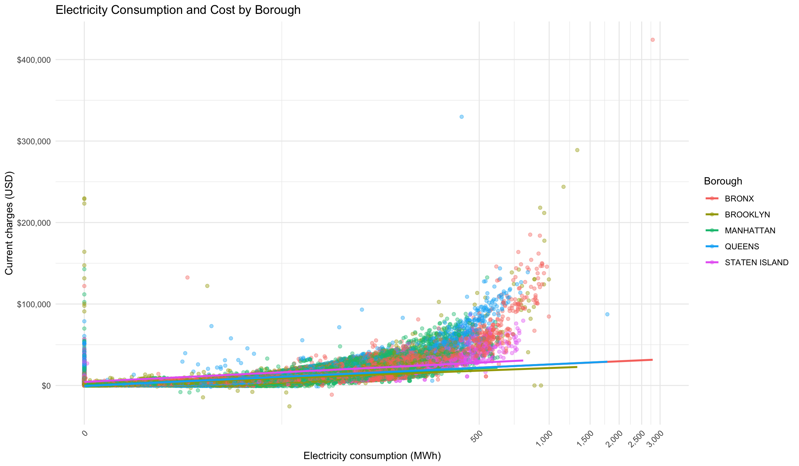
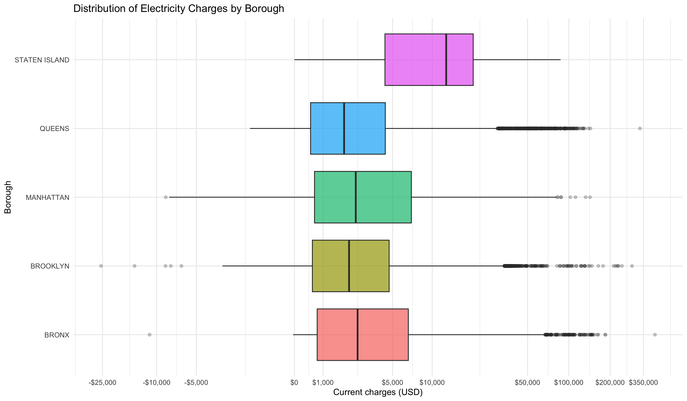

Code
library(readr)
library(dplyr)
library(tidyr)
library(ggplot2)
library(knitr)
library(scales)
nycha <- read_csv(
"Data/Electric_Consumption_And_Cost_(2010_-_Sep_2025)_20261018.csv",
show_col_types = FALSE
)The first step is to load the required packages and import the NYCHA electricity dataset.
library(readr)
library(dplyr)
library(tidyr)
library(ggplot2)
library(knitr)
library(scales)
nycha <- read_csv(
"Data/Electric_Consumption_And_Cost_(2010_-_Sep_2025)_20261018.csv",
show_col_types = FALSE
)The dataset is imported into R and stored in an object named nycha.
How is electricity consumption associated with electricity cost among NYCHA housing developments in New York City, and how does this relationship vary across boroughs?
This question is limited to the NYCHA billing records included in the dataset. The results cannot be generalized to all buildings in New York City.
The cases are monthly electricity billing records for NYCHA housing developments. Each row represents an electricity record for a development during a specific billing period.
nycha_cases <- nycha |>
transmute(
development_name = `Development Name`,
borough = Borough,
revenue_month = `Revenue Month`,
consumption_kwh = parse_number(
as.character(`Consumption (KWH)`)
),
current_charges = parse_number(
as.character(`Current Charges`)
)
)
cases_summary <- nycha_cases |>
summarise(
total_cases = n(),
total_developments = n_distinct(development_name),
total_boroughs = n_distinct(
borough[
borough %in% c(
"BRONX",
"BROOKLYN",
"MANHATTAN",
"QUEENS",
"STATEN ISLAND"
)
]
)
) |>
transmute(
`Total Cases` = comma(
total_cases,
accuracy = 1
),
`Total Developments` = comma(
total_developments,
accuracy = 1
),
`Total Boroughs` = comma(
total_boroughs,
accuracy = 1
)
)
kable(
cases_summary,
caption = "Summary of NYCHA Cases"
)| Total Cases | Total Developments | Total Boroughs |
|---|---|---|
| 553,666 | 381 | 5 |
The output shows the total number of billing records, developments, and boroughs represented in the dataset.
The data were collected from administrative electricity billing records for New York City Housing Authority developments. The records contain electricity consumption and cost information associated with developments, boroughs, and billing periods.
This is an observational study. The researcher did not assign electricity usage, electricity cost, borough, or billing period. Therefore, the analysis can describe associations but cannot establish causation.
The data were obtained from NYC Open Data.
Dataset: Electric Consumption and Cost
Publisher: New York City Housing Authority
Source: NYC Open Data — Electric Consumption and Cost
The original file is stored in:
Data/Electric_Consumption_And_Cost_(2010_-_Sep_2025)_20261018.csvThe following chunk selects and prepares the variables used in the analysis.
nycha_clean <- nycha |>
transmute(
development_name = `Development Name`,
borough = Borough,
revenue_month = `Revenue Month`,
consumption_kwh = parse_number(as.character(`Consumption (KWH)`)),
current_charges = parse_number(as.character(`Current Charges`)),
kwh_charges = parse_number(as.character(`KWH Charges`))
) |>
mutate(borough = toupper(trimws(borough)))
valid_boroughs <- c(
"BRONX",
"BROOKLYN",
"MANHATTAN",
"QUEENS",
"STATEN ISLAND"
)
glimpse(nycha_clean)Rows: 553,666
Columns: 6
$ development_name <chr> "SHEEPSHEAD BAY", "SHEEPSHEAD BAY", "SHEEPSHEAD BAY",…
$ borough <chr> "BROOKLYN", "BROOKLYN", "BROOKLYN", "BROOKLYN", "BROO…
$ revenue_month <chr> "2025-09", "2025-09", "2025-09", "2025-09", "2025-09"…
$ consumption_kwh <dbl> 33001, 36068, 30969, 40235, 33956, 26999, 41264, 3057…
$ current_charges <dbl> 5106.45, 5581.02, 4791.96, 6225.81, 5254.21, 4177.71,…
$ kwh_charges <dbl> 1523.76, 1665.38, 1429.94, 1857.78, 1567.86, 1246.63,…development_name and borough are qualitative variables. revenue_month is a time variable. consumption_kwh, current_charges, and kwh_charges are quantitative variables.
The main outcome variable is current_charges, and the main comparison variable is consumption_kwh. Borough will be used to compare the records across locations. The scatter plot includes a visual linear trend line to help describe the direction of the association. The trend line is used for visualization and is not presented as an inferential regression model. If a regression model were used, current_charges would be the dependent variable.
The following chunk calculates summary statistics for electricity consumption and electricity cost.
consumption_statistics <- nycha_clean |>
summarise(
observations = n(),
mean_consumption = mean(consumption_kwh, na.rm = TRUE) / 1000,
median_consumption = median(consumption_kwh, na.rm = TRUE) / 1000,
sd_consumption = sd(consumption_kwh, na.rm = TRUE) / 1000,
minimum_consumption = min(consumption_kwh, na.rm = TRUE) / 1000,
maximum_consumption = max(consumption_kwh, na.rm = TRUE) / 1000
)
kable(
consumption_statistics,
digits = 2,
col.names = c(
"Observations",
"Mean Consumption (MWh)",
"Median Consumption (MWh)",
"Standard Deviation (MWh)",
"Minimum Consumption (MWh)",
"Maximum Consumption (MWh)"
),
format.args = list(big.mark = ","),
caption = "Summary Statistics for Electricity Consumption"
)| Observations | Mean Consumption (MWh) | Median Consumption (MWh) | Standard Deviation (MWh) | Minimum Consumption (MWh) | Maximum Consumption (MWh) |
|---|---|---|---|---|---|
| 553,666 | 30.22 | 11.44 | 48.26 | 0 | 2,788.77 |
cost_statistics <- nycha_clean |>
summarise(
observations = n(),
mean_cost = mean(current_charges, na.rm = TRUE),
median_cost = median(current_charges, na.rm = TRUE),
sd_cost = sd(current_charges, na.rm = TRUE),
minimum_cost = min(current_charges, na.rm = TRUE),
maximum_cost = max(current_charges, na.rm = TRUE)
)
kable(
cost_statistics |>
mutate(
observations = comma(
observations,
accuracy = 1
),
across(
-observations,
~ dollar(.x, accuracy = 0.01)
)
),
col.names = c(
"Observations",
"Mean Cost (USD)",
"Median Cost (USD)",
"Standard Deviation (USD)",
"Minimum Cost (USD)",
"Maximum Cost (USD)"
),
caption = "Summary Statistics for Electricity Cost"
)| Observations | Mean Cost (USD) | Median Cost (USD) | Standard Deviation (USD) | Minimum Cost (USD) | Maximum Cost (USD) |
|---|---|---|---|---|---|
| 553,666 | $4,339.03 | $2,259.86 | $6,302.43 | -$25,622.21 | $424,298.64 |
The first table reports the number of observations, mean, median, standard deviation, minimum, and maximum for electricity consumption. The second table reports the same statistics for electricity cost. Separating the variables makes the results easier to read and compare.
borough_summary <- nycha_clean |>
filter(
borough %in% valid_boroughs,
!is.na(borough),
!is.na(consumption_kwh),
!is.na(current_charges)
) |>
group_by(borough) |>
summarise(
observations = n(),
average_consumption = mean(consumption_kwh, na.rm = TRUE) / 1000,
median_consumption = median(consumption_kwh, na.rm = TRUE) / 1000,
average_cost = mean(current_charges, na.rm = TRUE),
median_cost = median(current_charges, na.rm = TRUE),
.groups = "drop"
) |>
arrange(desc(average_consumption))
kable(
borough_summary |>
mutate(
across(
c(average_cost, median_cost),
~ dollar(.x, accuracy = 0.01)
)
),
digits = 2,
format.args = list(big.mark = ","),
col.names = c(
"Borough",
"Observations",
"Average Consumption (MWh)",
"Median Consumption (MWh)",
"Average Cost (USD)",
"Median Cost (USD)"
),
caption = "Electricity Consumption and Cost by Borough"
)| Borough | Observations | Average Consumption (MWh) | Median Consumption (MWh) | Average Cost (USD) | Median Cost (USD) |
|---|---|---|---|---|---|
| STATEN ISLAND | 4,143 | 107.75 | 63.20 | $14,132.55 | $12,689.84 |
| BRONX | 125,657 | 34.23 | 12.60 | $4,917.68 | $2,540.16 |
| MANHATTAN | 141,415 | 33.70 | 7.60 | $4,884.52 | $2,441.42 |
| BROOKLYN | 212,402 | 25.56 | 11.76 | $3,613.67 | $2,100.87 |
| QUEENS | 64,276 | 23.70 | 14.96 | $3,539.93 | $1,867.22 |
This table compares the typical electricity consumption and electricity cost among the boroughs.
The following table reports the number of records for each borough. This summarizes the qualitative variable used in the analysis.
borough_frequency <- nycha_clean |>
filter(borough %in% valid_boroughs) |>
count(borough, sort = TRUE) |>
transmute(
Borough = borough,
Observations = comma(n, accuracy = 1)
)
kable(
borough_frequency,
caption = "Number of Records by Borough"
)| Borough | Observations |
|---|---|
| BROOKLYN | 212,402 |
| MANHATTAN | 141,415 |
| BRONX | 125,657 |
| QUEENS | 64,276 |
| STATEN ISLAND | 4,143 |
This table shows how many electricity records are available for each borough.
ggplot(
nycha_clean |>
filter(
borough %in% valid_boroughs,
!is.na(consumption_kwh),
!is.na(current_charges)
),
aes(
x = consumption_kwh / 1000,
y = current_charges,
color = borough
)
) +
geom_point(alpha = 0.4) +
geom_smooth(
method = "lm",
se = FALSE
) +
scale_x_continuous(
trans = pseudo_log_trans(sigma = 10),
breaks = c(0, 500, 1000, 1500, 2000, 2500, 3000),
labels = comma,
name = "Electricity consumption (MWh)"
) +
scale_y_continuous(
labels = dollar_format(
accuracy = 1,
scale = 1
)
) +
coord_cartesian(xlim = c(0, 3000)) +
labs(
title = "Electricity Consumption and Cost by Borough",
x = "Electricity consumption (MWh)",
y = "Current charges (USD)",
color = "Borough"
) +
theme_minimal() +
theme(
axis.text.x = element_text(
angle = 45,
hjust = 1,
vjust = 1
)
)
Each point represents one electricity billing record. The plot examines whether higher electricity consumption tends to be associated with higher electricity cost.
ggplot(
nycha_clean |>
filter(
borough %in% valid_boroughs,
!is.na(borough),
!is.na(current_charges)
),
aes(x = borough, y = current_charges, fill = borough)
) +
geom_boxplot(alpha = 0.7, outlier.alpha = 0.25) +
scale_y_continuous(
trans = pseudo_log_trans(sigma = 1000),
breaks = c(
-25000,
-10000,
-5000,
0,
1000,
5000,
10000,
50000,
100000,
200000,
350000
),
labels = dollar_format(
accuracy = 1,
scale = 1
)
) +
labs(
title = "Distribution of Electricity Charges by Borough",
x = "Borough",
y = "Current charges (USD)"
) +
coord_flip() +
theme_minimal() +
theme(legend.position = "none")
This boxplot compares the median, variability, and possible outliers of electricity charges across boroughs.